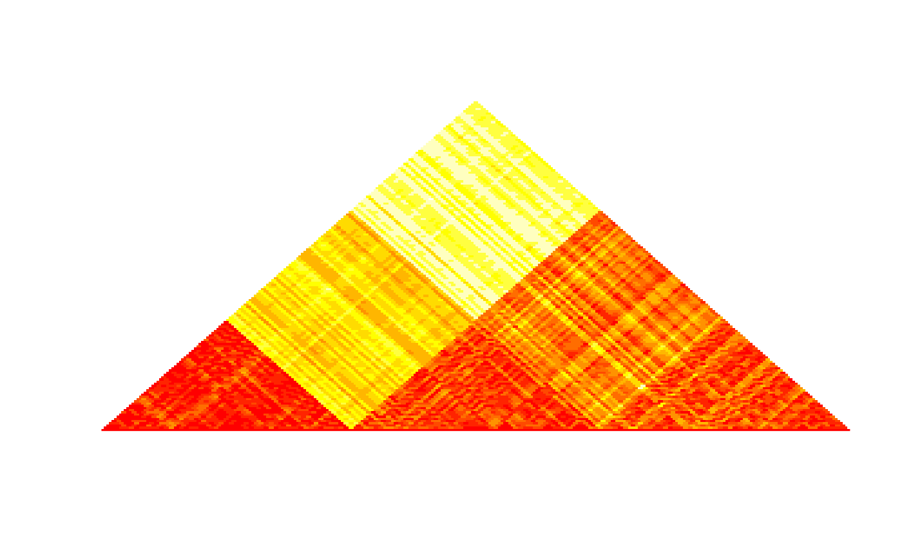

Heatmap of the (dis)similarity matrix
Arguments
- mat
matrix to plot. It can be of class
'matrix','dgCMatrix','dsCMatrix','dist','HTCexp','snpMatrix'.- type
input matrix type. Can be either
"similarity"or"dissimilarity"(kernels are supposed to be of type"similarity").- clustering
vector of length the number of rows (columns) of the matrix that contains a contiguity constrained clustering (as provided by
selectfor instance). If supplied the clustering is superimposed over the heatmap.- dendro
chacobject as provided, e.g., by the functionadjClust(or any of the other wrappers).- palette
color palette. Default to
heat.colors- breaks
number of breaks used to set colors from the palette. Those are based on the quantiles of the matrix entries and for skewed distributions the actual number used to set the palette can be lower than
breaks.- log
logical. Should the breaks be based on log-scaled values of the matrix entries. Default to
TRUE.- h
if
matis of class"snpMatrix", band parameter used to compute the linkage disequilibrium (seeld).- stats
if
matis of class"snpMatrix", type of linkage disequilibrium measure (seeld).- main
graphic title.
- col.clust
color for the borders of the clusters (if
clusteringis provided).- lwd.clust
line width for the borders of the clusters (if
clusteringis provided).- xaxis
logical. Should a x-axis be displayed? Default to
FALSE- naxis
number of breaks to display on the x-axis. For
HTCexpobjects, the axis is displayed in terms of Mpb and for the other types of input, it is displayed in terms of bin number. Default to10.
Details
This function produces a heatmap for the used (dis)similarity matrix that can be used as a diagnostic plot to check the consistency between the obtained clustering and the original (dis)similarity
Examples
# input as HiTC::HTCexp object
if (FALSE) {
if (require("HiTC", quietly = TRUE)) {
load(system.file("extdata", "hic_imr90_40_XX.rda", package = "adjclust"))
plotSim(hic_imr90_40_XX)
# with a constrained clustering
res <- hicClust(hic_imr90_40_XX, log = TRUE)
selected.capushe <- select(res)
plotSim(hic_imr90_40_XX, clustering = selected.capushe, xaxis = TRUE)
plotSim(hic_imr90_40_XX, clustering = selected.capushe, dendro = res)
}}
plotSim(dist(iris[ ,1:4]), log = FALSE)
#> Note: input class is 'dist' so 'type' is supposed to be 'dissimilarity'
